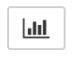

An Awesome Slide Show ¶
Introduction¶
The goal here is to show a slideshow that is BETTER than BEAMER.
We can use Metadata and CSS files to customize the slideshow.
Use “Space bar” to advance the slides, “SHIFT-Space” to go backwards.
Use “w” to get an overview of all your slides.
Note on RISE:¶
You may need to install RISE first. https://rise.readthedocs.io/en/stable/
However, it is already installed for you on the Callysto hub.
Note:¶
When creating the slideshow, use the “View” menu to select “Cell Toolbar/Slideshow.”
Then each cell can be idenfied as a Slide, Sub-Slide, Fragment, etc.
To switch into “Display” mode, click on the Slideshow icon in the menu bar.
You need to edit the notebook’s metadata. Go to “Edit” menu in the notebook to find this.
Here is what I added at the bottom of the metadata file.
{
...
},
"livereveal": {
"autolaunch": true,
"backimage": "RockiesCallysto.jpg",
"footer": "<h3>M. Lamoureux, Callysto </h3>",
"header": "<h1>Awesome Show</h1>"
}
}
Make sure you save the notebook after you make these changes. The background image has to be in the folder.
You can replace the background image with a theme. Some themes you might like to try:
beige, black, blood, league, moon, night, serif, simple, sky, solarized, white.
Enter this in the Metadata as “theme” : “sky”
There are also files rise.css (for all notebooks in folder) and Slideshow_Callysto.css (for just this one notebook) that you can edit to make changes to the formatting.
Here is what I put in Slideshow_Callysto.css to adjust the header and footer.
#rise-header {
margin: 10px;
left: 10%;
}
#rise-footer {
margin: 10px;
right: 10%;
}
#rise-backimage {
opacity: 0.50;
}
Here is what I put in rise.css to adjust font sizes (for fun).
body.rise-enabled div.inner_cell>div.text_cell_render.rendered_html {
font-size: 90%;
}
div.inner_cell>div.text_cell_render.rendered_html>pre {
margin: 0px;
}
div.inner_cell>div.text_cell_render.rendered_html>pre>code {
font-size: 90%;
}
Further details¶
Notes on customizing your slideshow:¶
https://rise.readthedocs.io/en/docs_hot_fixes/customize.html
Note it works well when customization is done in the Metadata. Not so well in the CSS files, in my experience.
Why bother?¶
The point is I can do beautiful math like this:
I can even put in live code directly. For instance, here we compute the Fibonacci numbers.
fib = [0,1]
for i in range(2,20):
fib.append( fib[i-1]+fib[i-2] )
print(fib)
[0, 1, 1, 2, 3, 5, 8, 13, 21, 34, 55, 89, 144, 233, 377, 610, 987, 1597, 2584, 4181]